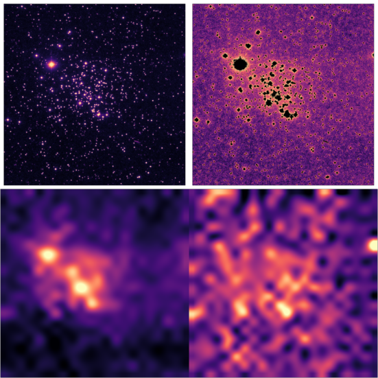
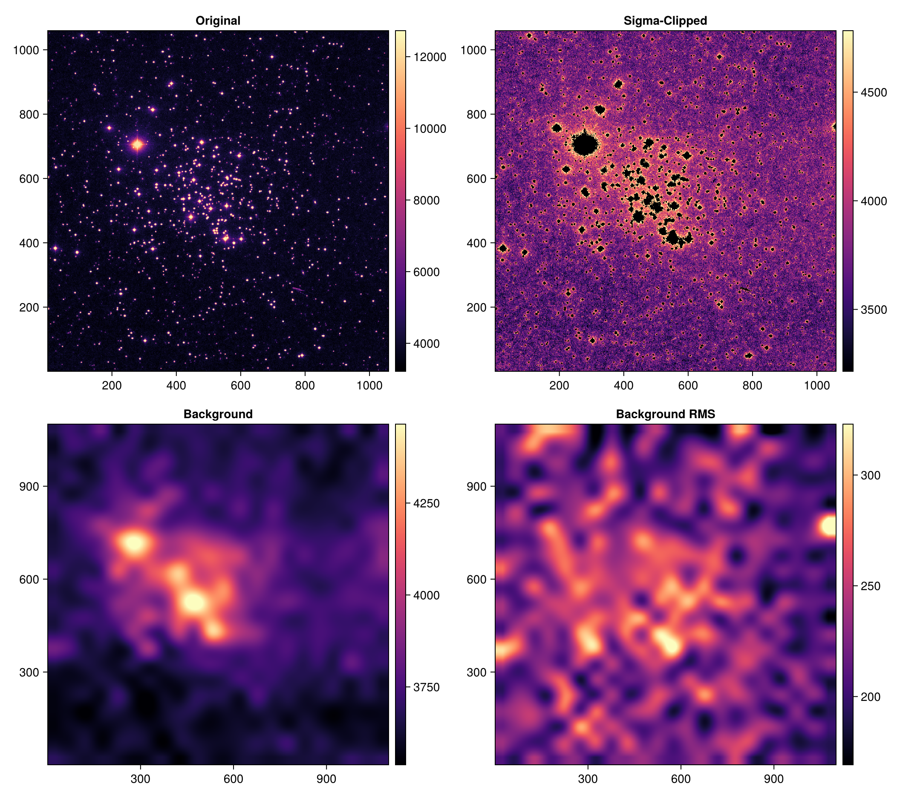
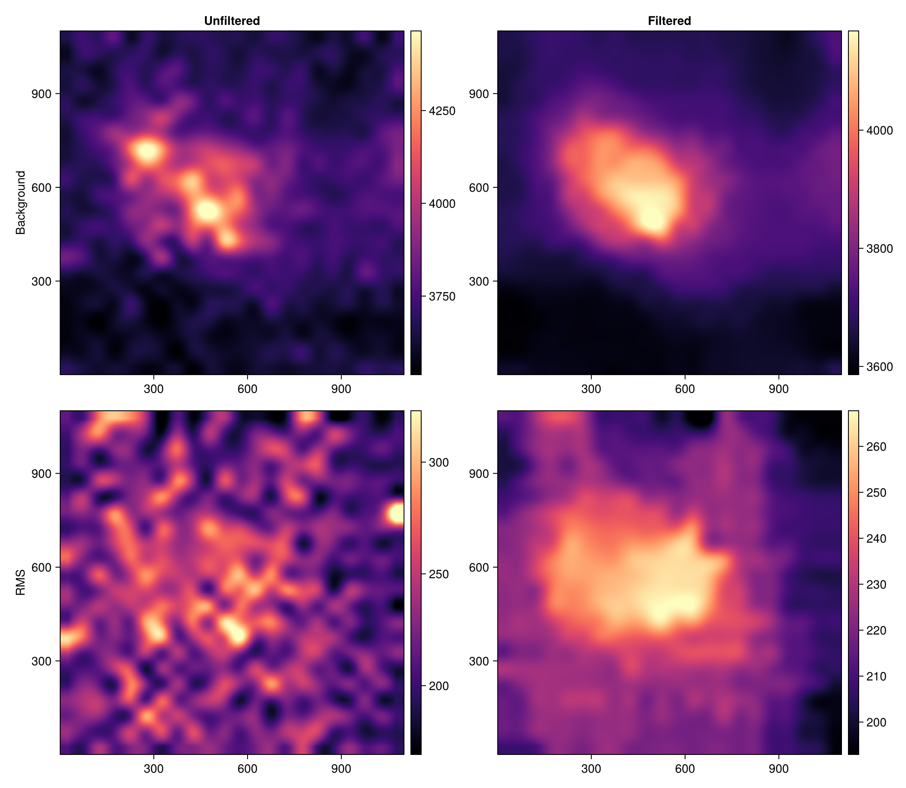
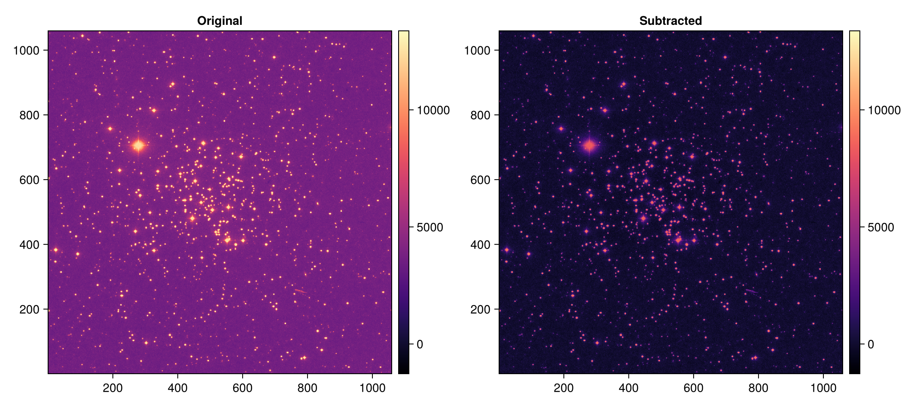
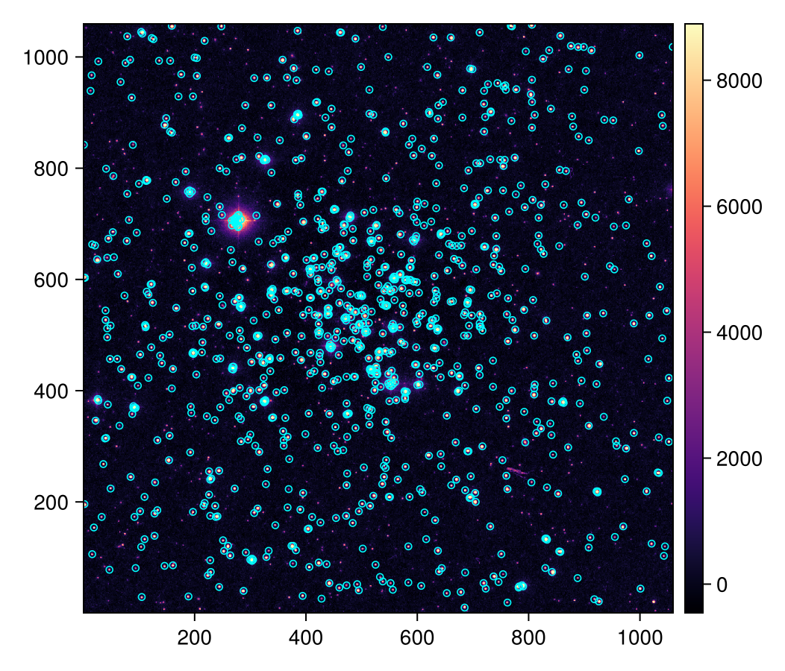
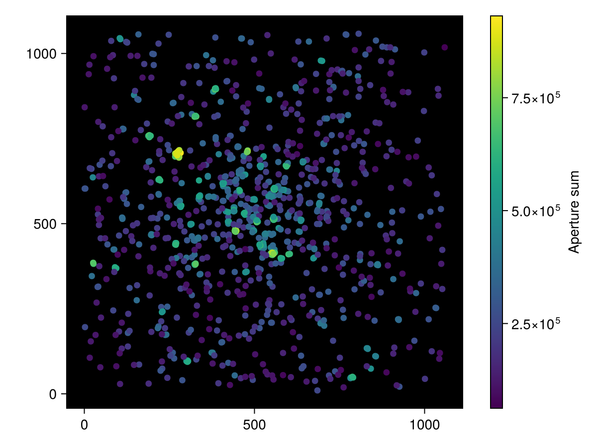

Photometry
The following examples are adapted from Photometry.jl to show the same examples combined with AstroImages.jl. To learn how to measure background levels, perform aperture photometry, etc., see the Photometry.jl documentation.
Background Estimation
From Photometry.jl:
Estimating backgrounds is an important step in performing photometry. Ideally, we could perfectly describe the background with a scalar value or with some distribution. Unfortunately, it's impossible for us to precisely separate the background and foreground signals. Here, we use mixture of robust statistical estimators and meshing to let us get the spatially varying background from an astronomical photo.
Let's show an example [...]. Now let's try and estimate the background using
estimate_background. First, we'll sigma-clip to try and remove the signals from the stars. Then, the background is broken down into boxes, in this case of size (50, 50). Within each box, the given statistical estimators get the background value and RMS. By default, we useSourceExtractorBackgroundandStdRMS. This creates a low-resolution image, which we then need to resize. We can accomplish this using an interpolator, by default a cubic-spline interpolator viaZoomInterpolator. The end result is a smooth estimate of the spatially varying background and background RMS.
using Photometry
using AstroImages
using CairoMakie # optional, for implot functionality
using Downloads: download
# Download our image, courtesy of astropy
image = load(download("https://rawcdn.githack.com/astropy/photutils-datasets/8c97b4fa3a6c9e6ea072faeed2d49a20585658ba/data/M6707HH.fits"))
# sigma-clip
clipped = sigma_clip(image, 1; fill = NaN)
# get background and background rms with box-size (50, 50)
bkg, bkg_rms = estimate_background(clipped, 50)We can take a look at each of our processed images with imview:
using Images: mosaic
mosaic(
imview(image), imview(clipped; nan_color = :black),
imview(bkg), imview(bkg_rms);
nrow = 2, rowmajor = true,
)
Or all together with Makie. Giving each panel a fixed axis width (the height is derived from the image aspect) lets resize_to_layout! shrink-wrap the figure around the panels:
fig = Figure()
implotview(fig[1, 1], image; axis = (; title = "Original", width = 400))
implotview(fig[1, 2], clipped; nan_color = :black, axis = (; title = "Sigma-Clipped", width = 400))
implotview(fig[2, 1], bkg; axis = (; title = "Background", width = 400))
implotview(fig[2, 2], bkg_rms; axis = (; title = "Background RMS", width = 400))
resize_to_layout!(fig)
fig
We could apply a median filter, too, by specifying filter_size:
# get background and background rms with box-size (50, 50) and filter_size (5, 5)
bkg_f, bkg_rms_f = estimate_background(clipped, 50; filter_size = 5)
# plot
fig = Figure()
implotview(fig[1, 1], bkg; axis = (; title = "Unfiltered", ylabel = "Background", width = 400))
implotview(fig[1, 2], bkg_f; axis = (; title = "Filtered", width = 400))
implotview(fig[2, 1], bkg_rms; axis = (; ylabel = "RMS", width = 400))
implotview(fig[2, 2], bkg_rms_f; axis = (; width = 400))
resize_to_layout!(fig)
fig
Now we can see our image after subtracting the filtered background and ready for Aperture Photometry!
subt = image .- bkg_f[axes(image)...]
clims = extrema(vcat(vec(image), vec(subt)))
fig = Figure()
implotview(fig[1, 1], image; clims, axis = (; title = "Original", width = 400))
implotview(fig[1, 2], subt; clims, axis = (; title = "Subtracted", width = 400))
resize_to_layout!(fig)
fig
Source Extraction
From the background-subtracted image, we can detect all sources in the image:
# We specify the uncertainty in the pixel data. We'll set it equal to zero.
errs = zeros(axes(subt))
sources = extract_sources(PeakMesh(), subt, errs) # Sorted from brightest to darkestTable with 3 columns and 57255 rows:
x y value
┌────────────────────
1 │ 226 255 9762.42
2 │ 681 940 9661.5
3 │ 924 219 9653.78
4 │ 678 38 9647.93
5 │ 85 245 9637.55
6 │ 1001 44 9633.13
7 │ 904 503 9627.34
8 │ 775 819 9625.92
9 │ 62 610 9617.79
10 │ 110 133 9616.88
11 │ 123 592 9614.86
12 │ 248 1055 9612.46
13 │ 86 424 9611.86
14 │ 125 558 9585.93
15 │ 1021 125 9582.11
16 │ 637 112 9579.71
17 │ 2 196 9579.49
⋮ │ ⋮ ⋮ ⋮There's over 60,000 sources!
We'll define a circular aperture for each source. The x/y positions reported by extract_sources follow the same coordinate convention as the apertures (and implot), so they can be passed through directly:
aps = CircularAperture.(sources.x, sources.y, 6)[1:1000] # just brightest thousand point sources1000-element Vector{CircularAperture{Int64}}:
CircularAperture(226, 255, r=6)
CircularAperture(681, 940, r=6)
CircularAperture(924, 219, r=6)
CircularAperture(678, 38, r=6)
CircularAperture(85, 245, r=6)
CircularAperture(1001, 44, r=6)
CircularAperture(904, 503, r=6)
CircularAperture(775, 819, r=6)
CircularAperture(62, 610, r=6)
CircularAperture(110, 133, r=6)
⋮
CircularAperture(686, 73, r=6)
CircularAperture(510, 622, r=6)
CircularAperture(777, 753, r=6)
CircularAperture(957, 309, r=6)
CircularAperture(844, 285, r=6)
CircularAperture(634, 728, r=6)
CircularAperture(548, 1000, r=6)
CircularAperture(98, 409, r=6)
CircularAperture(501, 544, r=6)We can overplot them on our original image: loading Photometry.jl together with a Makie backend activates Photometry's Makie extension, which knows how to draw every aperture type (and a whole vector of them in a single call):
fig, iv = implotview(subt)
lines!(iv.ax, aps; color = :cyan, linewidth = 0.8)
fig
Measuring Photometry
Finally we can extract the source photometry:
table = photometry(aps, subt)Table with 3 columns and 1000 rows:
xcenter ycenter aperture_sum
┌───────────────────────────────
1 │ 226 255 2.68695e5
2 │ 681 940 2.35489e5
3 │ 924 219 3.65716e5
4 │ 678 38 2.21709e5
5 │ 85 245 2.4336e5
6 │ 1001 44 1.98733e5
7 │ 904 503 2.25028e5
8 │ 775 819 3.59414e5
9 │ 62 610 2.36377e5
10 │ 110 133 1.60012e5
11 │ 123 592 3.0983e5
12 │ 248 1055 2.48006e5
13 │ 86 424 3.69146e5
14 │ 125 558 2.87415e5
15 │ 1021 125 1.83522e5
16 │ 637 112 2.90848e5
17 │ 2 196 2.56751e5
⋮ │ ⋮ ⋮ ⋮And plot them:
fig = Figure()
ax = Axis(fig[1, 1]; aspect = DataAspect(), backgroundcolor = :black)
sc = scatter!(ax, table.xcenter, table.ycenter; color = table.aperture_sum)
Colorbar(fig[1, 2], sc; label = "Aperture sum")
fig